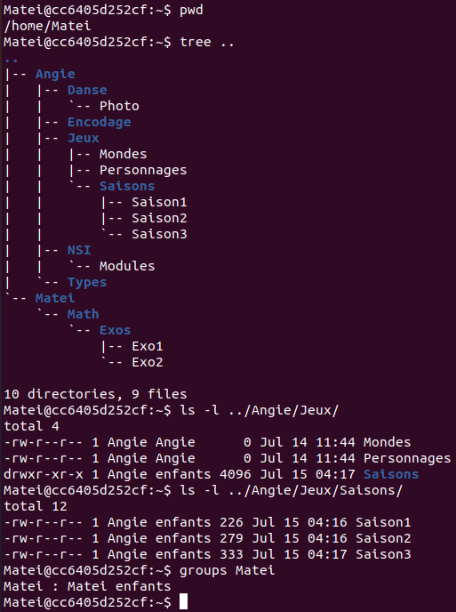

Séquence 2⚓︎
EXERCICES⚓︎
Révision: Cocher la ou les bonnes réponses⚓︎
-
La commande
ls -al: -
permet de lister les fichiers du répertoire courant sans détail.
- permet de lister les fichiers standards et cachés du répertoire courant.
- permet d’afficher des détails sur un fichier comme son propriétaire ou ses droits.
-
n’existe pas en Bash.
-
La commande
mv: -
sert à copier des fichiers ou répertoires.
- sert à déplacer des fichiers ou répertoires.
- peut servir à renommer un fichier ou un répertoire.
-
n’existe pas en Bash.
-
La commande
ls -l toto.shaffiche-r-xr--r-- 1 john staff 128 18 mai 11:56 toto.sh. -
toto.sh appartient à john.
- toto.sh appartient à staff du groupe john.
- Personne n’a le droit d’écriture sur toto.sh.
-
Personne n’a le droit de lire toto.sh.
-
Dans un terminal, on tape
cd(sans arguments) pour se placer dans son répertoire personnel, noté parfoisHOME. Quelle commande doit-on ensuite taper pour déplacer dans le répertoire courant le fichierexo1.pyqui se trouve dansDocuments/python/en sachant queDocumentsest dansHOME? -
cp Documents/python/exo1.py -
mv /Documents/python/exo1.py -
mv ./Documents/python/exo1.py . -
rm Documents/python/exo1.py
Indication pour les exercices
üëâ On utilisera la machine Linux simplifi√©e. On se connectera avec le compte de Matei en saisissant la commande su Matei (son mot de passe est eleve). Puis on se d√©place dans son r√©pertoire personnel avec cd ~.
Exercice 1 - Trouver son chemin⚓︎
Observer l’arborescence suivante :

-
Proposer une commande qui permette de se déplacer du répertoire
HOMEde Alice à celui de Bob :- en utilisant un chemin relatif ;
- en utilisant un chemin absolu.
-
Alice est à la racine
/. Proposer deux commandes qui peuvent lui permettre de se déplacer dans son répertoire personnel (HOME). -
Bob est dans son
HOME. Aidez-le à :- lister le contenu de son
HOME; - lister le contenu de son
HOMEy compris les fichiers et répertoires cachés ; - lister le contenu du répertoire
sharesans quitter sonHOME.
- lister le contenu de son
Exercice 2 - Créer une arborescence et se déplacer dedans⚓︎
-
Créer dans le répertoire personnel de
Mateil’arborescence ci-dessus dans laquelle A, B, C, D, E, F et G sont des répertoires. -
La commande du shell
touch nom_fichierpermet de créer un fichier vide. Créer deux fichiers vides appelésunetdeuxdans le répertoire d’accueil. -
Quelle commande permet de copier des fichiers ou répertoires ? Copier le fichier
undans le répertoireAen lui donnant le nomtrois. -
Comment réaliser la copie précédente en utilisant un chemin relatif si vous êtes :
- dans le répertoire A ?
- dans le répertoire B ?
-
Si votre nom d’utilisateur est
Angie, comment réaliser cette copie en utilisant un chemin absolu ? -
Comment renommer le fichier
troisenquatre?
Exercice 3 - Utiliser les pages du manuel d'une commande⚓︎
- Quelle option de la commande
echofaut-il utiliser pour rester sur la même ligne ? - Comment faut-il faire pour afficher un message sur plusieurs lignes avec cette même commande ?
- La commande
cat nom_fichierpermet d'afficher son contenu dans le terminale. Comment peut-on afficher le contenu avec les numéros de lignes? Tester.
Exercice 4 - Avez-vous les droits ?⚓︎
On considère le système étudié dans les activités préparatoires. L'utilisateur Matei est connecté et a obtenu les informations suivantes:

Commandes utilisées: tree repertoire affiche l'arborescence des fichiers depuis repertoire et groups utilisateur permet de connaitre les groupes auxquels appartient utilisateur.
- Matei souhaite ajouter un fichier
Saison4dans le dossierSaisonsd'Angie. Peut-il le faire directement ? Justifier la réponse. - Proposer une stratégie pour résoudre le problème.